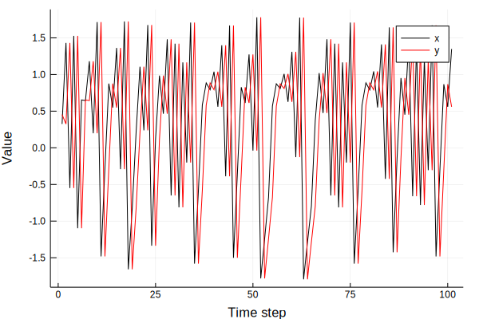

Synthetic coupled dynamical systems
Two coupled Henon maps
For this example, we'll consider set of unidirectionally coupled Henon maps, given by the difference equations
where the parameter c controls how strong the dynamical forcing is.
Where has the system been used?
This system was investigated by Krakovská et al. (2018) to study the performance of different causality detection algorithms.
Represent as a DiscreteDynamicalSystem
We first define the equations of motion.
function eom_henon2(x, p, n)
c = p[1]
x₁, x₂, y₁, y₂ = (x...,)
dx₁ = 1.4 - x₁^2 + 0.3*x₂
dx₂ = x₁
dy₁ = 1.4 - (c * x₁ * y₁ + (1 - c)*y₁^2) + 0.3*y₂
dy₂ = y₁
return SVector{4}(dx₁, dx₂, dy₁, dy₂)
end
To make things easier to use, we create function that generates a DiscreteDynamicalSystem instance for any coupling strength c and initial condition u₀.
function henon2(;u₀ = rand(4), c = 0.1)
p = [c]
return DiscreteDynamicalSystem(eom_henon2, u₀, p)
end
By tuning the coupling strength c, we may control the strength of the influence $x$ has on $y$. An example realization of the system when the coupling strength is c = 0.5 is:
s = henon2(c = 0.5)
orbit = trajectory(s, 100)
x, y = orbit[:, 1], orbit[:, 2]
plot(x, label = "x", lc = :black)
plot!(y, label = "y", lc = :red)
xlabel!("Time step"); ylabel!("Value")

Predefined system
This system is predefined in CausalityTools.Systems, and can be initialized using the henon2 function.
References
Krakovská, A., Jakubík, J., Chvosteková, M., Coufal, D., Jajcay, N., & Paluš, M. (2018). Comparison of six methods for the detection of causality in a bivariate time series. Physical Review E, 97(4), 042207. https://journals.aps.org/pre/abstract/10.1103/PhysRevE.97.042207